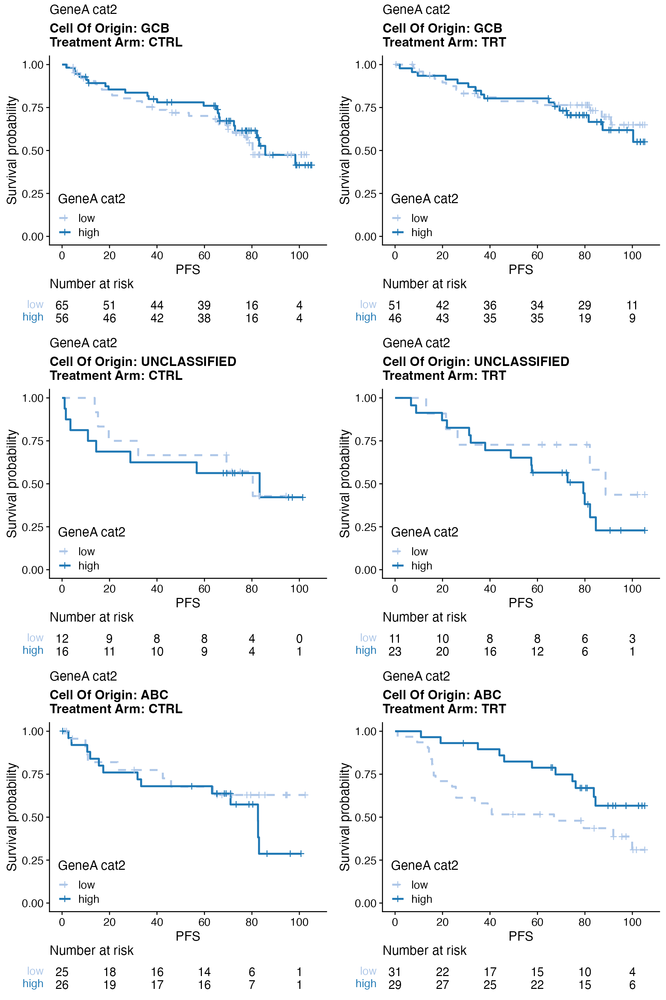
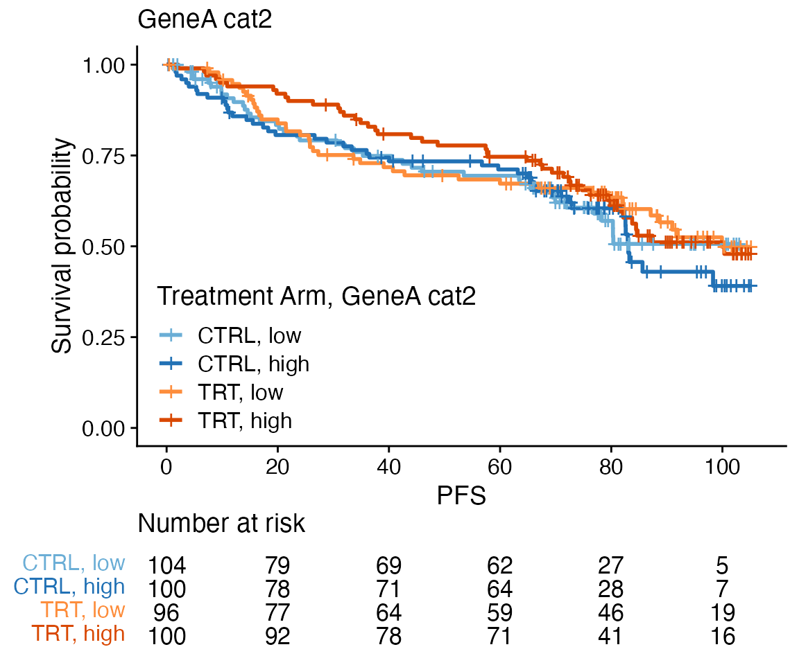
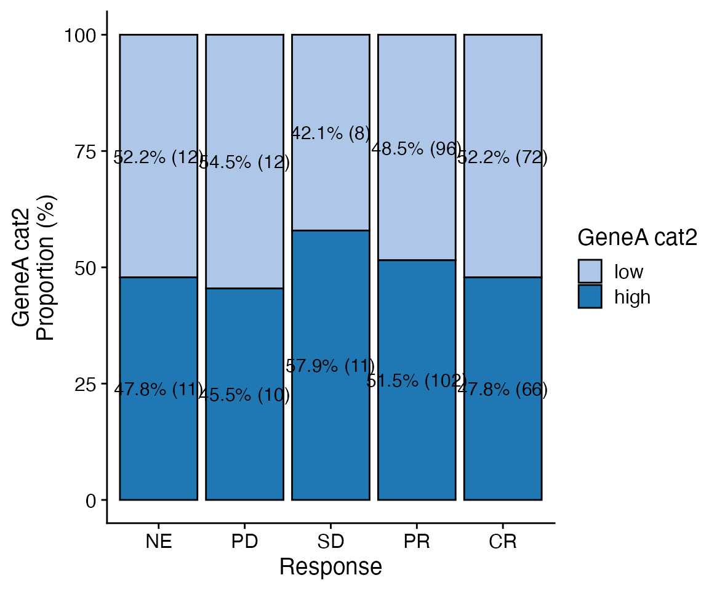
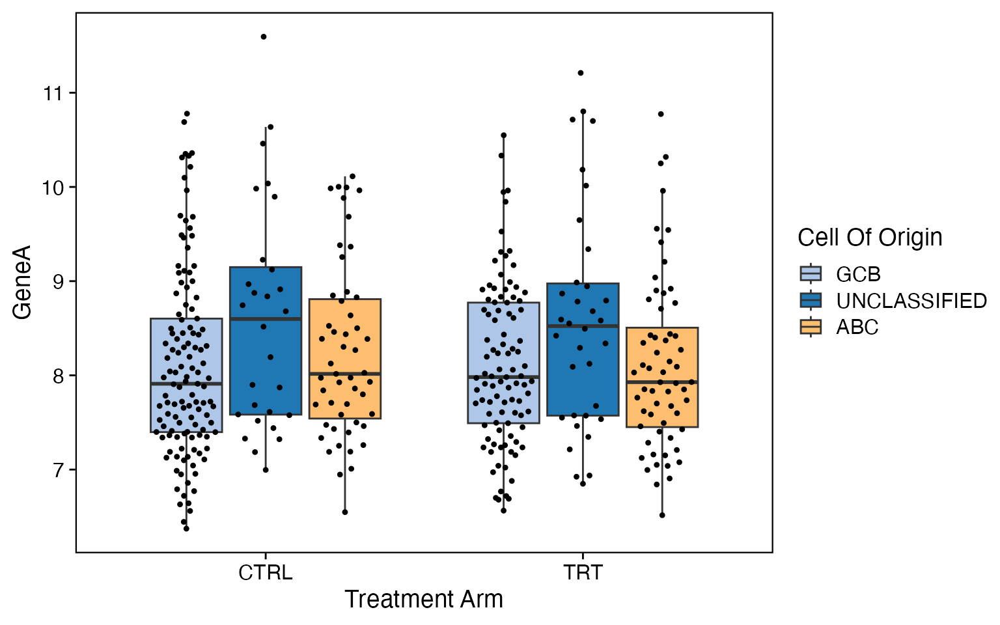
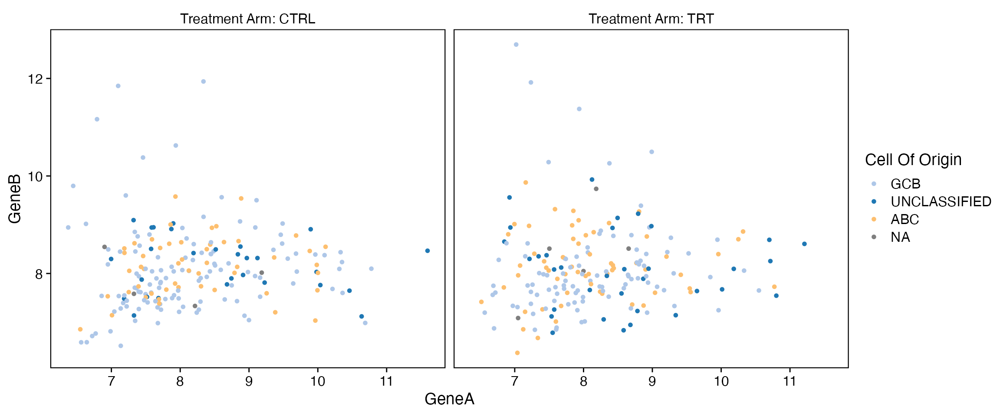
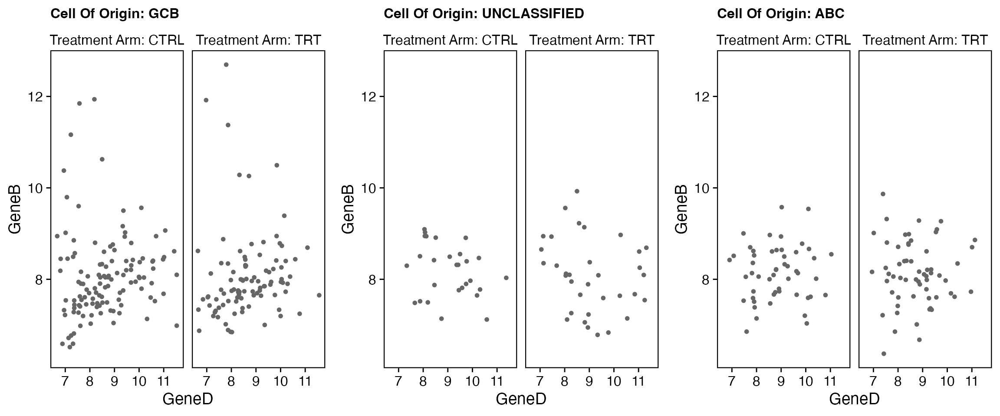

Exploratory biomarker analysis
Malgorzata Nowicka
2020-07-27
Exploratory_Biomarker_Analysis.Rmd### Packages to compile rmarkdown library(knitr) library(rmarkdown) ### Packages for nice tables library(kableExtra) font_size <- 9 cache <- 0 ### Set global option for font_size for bkable in this document options(bkable_font_size = font_size) options(bkable_full_width = TRUE) knitr::opts_chunk$set(cache = cache, cache.comments = FALSE, echo = TRUE, warning = FALSE, message = FALSE, error = FALSE, fig.width = 6, fig.height = 5, fig.align = "center", tidy=TRUE, tidy.opts = list(width.cutoff = 80))
ggplot2::theme_set(cowplot::theme_cowplot()) library(BiomarkerWrappers) # devtools::load_all()
Load data
bdata object contains random survival and biomarker data. It is not expected to observe any biologically meaningful associations. The goal for this data sets is to solely demonstrate the functionality of this package.
data(bdata) ### Dichotomize gene expression into low and high genes <- c("BCL2", "GeneA", "GeneB", "GeneC", "GeneD") data_cat2 <- dplyr::mutate_all(bdata[, genes], cut_core_2groups) colnames(data_cat2) <- paste0(genes, "_cat2") ### Stratify gene expression into quartiles data_cat4 <- dplyr::mutate_all(bdata[, genes], cut_core_quartiles) colnames(data_cat4) <- paste0(genes, "_cat4") bdata <- cbind(bdata, data_cat2, data_cat4)
Log-rank test
### Biomarker effect data <- bdata tte_var <- "PFS" censor_var <- "PFS_Event" biomarker_vars <- c("GeneA_cat2", "GeneB_cat2") strat1_var = "Treatment_Arm" wrapper_log_rank_test_biomarker(data, tte_var = tte_var, censor_var = censor_var, biomarker_vars = biomarker_vars, strat1_var = strat1_var, print_nevent = TRUE, print_mst = TRUE)
| Treatment Arm | Biomarker | Subgroup | Total N | Total Events | N | Events | MST | MST 95% CI | HR | HR 95% CI | P-value | Adj. P-value |
|---|---|---|---|---|---|---|---|---|---|---|---|---|
| CTRL | GeneA cat2 | low | 204 | 85 | 104 | 41 (39.4%) | NA | (76.9 - NA) | 0.8211 | 0.8917 | ||
| high | 204 | 85 | 100 | 44 (44.0%) | 83.1 | (82.1 - NA) | 1.05 | (0.69 - 1.61) | ||||
| TRT | GeneA cat2 | low | 196 | 83 | 96 | 40 (41.7%) | 99.9 | (82.2 - NA) | 0.8917 | 0.8917 | ||
| high | 196 | 83 | 100 | 43 (43.0%) | 100.3 | (81.6 - NA) | 0.97 | (0.63 - 1.49) | ||||
| CTRL | GeneB cat2 | low | 204 | 85 | 96 | 35 (36.5%) | 98.3 | (82.6 - NA) | 0.0120 * | 0.0478 * | ||
| high | 204 | 85 | 108 | 50 (46.3%) | 80.4 | (63.6 - NA) | 1.73 | (1.12 - 2.68) | ||||
| TRT | GeneB cat2 | low | 196 | 83 | 104 | 38 (36.5%) | NA | (91.0 - NA) | 0.2437 | 0.4874 | ||
| high | 196 | 83 | 92 | 45 (48.9%) | 87.5 | (82.1 - NA) | 1.29 | (0.84 - 1.99) |
### Treatment effect within biomarker subgroups data <- bdata tte_var <- "PFS" censor_var <- "PFS_Event" treatment_var = "Treatment_Arm" biomarker_vars <- c("GeneA_cat2", "GeneB_cat2") wrapper_log_rank_test_treatment(data, tte_var = tte_var, censor_var = censor_var, treatment_var = treatment_var, biomarker_vars = biomarker_vars)
| Biomarker | Biomarker Subgroup | Treatment Subgroup | Total N | Total Events | N | Events | MST | MST 95% CI | HR | HR 95% CI | P-value | Adj. P-value |
|---|---|---|---|---|---|---|---|---|---|---|---|---|
| GeneA cat2 | low | CTRL | 200 | 81 | 104 | 41 (39.4%) | NA | (76.9 - NA) | 0.5693 | 0.7591 | ||
| TRT | 200 | 81 | 96 | 40 (41.7%) | 99.9 | (82.2 - NA) | 0.88 | (0.57 - 1.37) | ||||
| GeneA cat2 | high | CTRL | 200 | 87 | 100 | 44 (44.0%) | 83.1 | (82.1 - NA) | 0.2526 | 0.5052 | ||
| TRT | 200 | 87 | 100 | 43 (43.0%) | 100.3 | (81.6 - NA) | 0.78 | (0.51 - 1.19) | ||||
| GeneB cat2 | low | CTRL | 200 | 73 | 96 | 35 (36.5%) | 98.3 | (82.6 - NA) | 0.9213 | 0.9213 | ||
| TRT | 200 | 73 | 104 | 38 (36.5%) | NA | (91.0 - NA) | 0.98 | (0.62 - 1.55) | ||||
| GeneB cat2 | high | CTRL | 200 | 95 | 108 | 50 (46.3%) | 80.4 | (63.6 - NA) | 0.0893 . | 0.3574 | ||
| TRT | 200 | 95 | 92 | 45 (48.9%) | 87.5 | (82.1 - NA) | 0.70 | (0.47 - 1.06) |
Cox regression
### Biomarker effect data <- bdata tte_var <- "PFS" censor_var <- "PFS_Event" biomarker_vars <- c("GeneA_cat2", "GeneA") adjustment_vars <- "IPI" strat1_var = "Treatment_Arm" wrapper_cox_regression_biomarker(data, tte_var = tte_var, censor_var = censor_var, biomarker_vars = biomarker_vars, adjustment_vars = adjustment_vars, strat1_var = strat1_var)
| Treatment Arm | Biomarker | Subgroup | Total N | Total Events | N | Events | MST | MST 95% CI | HR | HR 95% CI | P-value | Adj. P-value |
|---|---|---|---|---|---|---|---|---|---|---|---|---|
| CTRL | GeneA cat2 | low | 204 | 85 | 104 | 41 (39.4%) | NA | (76.9 - NA) | ||||
| high | 204 | 85 | 100 | 44 (44.0%) | 83.1 | (82.1 - NA) | 1.00 | (0.65 - 1.55) | 0.9828 | 0.9828 | ||
| TRT | GeneA cat2 | low | 196 | 83 | 96 | 40 (41.7%) | 99.9 | (82.2 - NA) | ||||
| high | 196 | 83 | 100 | 43 (43.0%) | 100.3 | (81.6 - NA) | 0.91 | (0.59 - 1.41) | 0.6827 | 0.9828 | ||
| CTRL | GeneA | 204 | 85 | 1.06 | (0.86 - 1.31) | 0.5723 | 0.9828 | |||||
| TRT | GeneA | 196 | 83 | 1.03 | (0.82 - 1.29) | 0.8129 | 0.9828 |
### Treatment effect within biomarker subgroups data <- bdata tte_var <- "PFS" censor_var <- "PFS_Event" treatment_var = "Treatment_Arm" biomarker_vars <- c("GeneA_cat2", "GeneB_cat2") adjustment_vars <- "IPI" wrapper_cox_regression_treatment(data, tte_var = tte_var, censor_var = censor_var, treatment_var = treatment_var, biomarker_vars = biomarker_vars, adjustment_vars = adjustment_vars)
| Biomarker | Biomarker Subgroup | Treatment Subgroup | Total N | Total Events | N | Events | MST | MST 95% CI | HR | HR 95% CI | P-value | Adj. P-value |
|---|---|---|---|---|---|---|---|---|---|---|---|---|
| GeneA cat2 | low | CTRL | 200 | 81 | 104 | 41 (39.4%) | NA | (76.9 - NA) | ||||
| TRT | 200 | 81 | 96 | 40 (41.7%) | 99.9 | (82.2 - NA) | 0.83 | (0.53 - 1.30) | 0.4156 | 0.5541 | ||
| GeneA cat2 | high | CTRL | 200 | 87 | 100 | 44 (44.0%) | 83.1 | (82.1 - NA) | ||||
| TRT | 200 | 87 | 100 | 43 (43.0%) | 100.3 | (81.6 - NA) | 0.75 | (0.49 - 1.15) | 0.1917 | 0.3835 | ||
| GeneB cat2 | low | CTRL | 200 | 73 | 96 | 35 (36.5%) | 98.3 | (82.6 - NA) | ||||
| TRT | 200 | 73 | 104 | 38 (36.5%) | NA | (91.0 - NA) | 0.92 | (0.58 - 1.47) | 0.7371 | 0.7371 | ||
| GeneB cat2 | high | CTRL | 200 | 95 | 108 | 50 (46.3%) | 80.4 | (63.6 - NA) | ||||
| TRT | 200 | 95 | 92 | 45 (48.9%) | 87.5 | (82.1 - NA) | 0.63 | (0.41 - 0.96) | 0.0301 * | 0.1204 |
### Treatment-biomarker interaction effect data <- bdata tte_var <- "PFS" censor_var <- "PFS_Event" treatment_var = "Treatment_Arm" biomarker_vars <- c("GeneA_cat2", "GeneA") adjustment_vars <- "IPI" wrapper_cox_regression_interaction(data, tte_var, censor_var, treatment_var = treatment_var, biomarker_vars = biomarker_vars, adjustment_vars = adjustment_vars)
| Biomarker | Biomarker Effect | Treatment Effect | Total N | HR | HR 95% CI | P-value | Adj. P-value |
|---|---|---|---|---|---|---|---|
| GeneA cat2 | high vs low | TRT vs CTRL | 400 | 0.92 | (0.50 - 1.70) | 0.7985 | 0.8593 |
| GeneA | TRT vs CTRL | 400 | 0.97 | (0.72 - 1.32) | 0.8593 | 0.8593 |
KM plot
data <- bdata tte_var <- "PFS" censor_var <- "PFS_Event" covariate_var <- "Treatment_Arm" wrapper_core_KM_plot(data = data, tte_var = tte_var, censor_var = censor_var, covariate_var = covariate_var)

data <- bdata tte_var <- "PFS" censor_var <- "PFS_Event" covariate_var <- "GeneA_cat2" strat1_var = "Treatment_Arm" strat2_var = "Cell_Of_Origin" wrapper_core_KM_plot_strat(data = data, tte_var = tte_var, censor_var = censor_var, covariate_var = covariate_var, strat1_var = strat1_var, strat2_var = strat2_var)

data <- bdata tte_var <- "PFS" censor_var <- "PFS_Event" biomarker_var <- "GeneA_cat2" treatment_var = "Treatment_Arm" wrapper_KM_plot_interaction(data, tte_var = tte_var, censor_var = censor_var, biomarker_var = biomarker_var, treatment_var = treatment_var)

data <- bdata tte_var <- "PFS" censor_var <- "PFS_Event" biomarker_var <- "GeneA_cat2" treatment_var = "Treatment_Arm" wrapper_KM_plot_biomarker(data, tte_var = tte_var, censor_var = censor_var, biomarker_var = biomarker_var, treatment_var = treatment_var)

data <- bdata tte_var <- "PFS" censor_var <- "PFS_Event" biomarker_var <- "GeneA_cat2" treatment_var = "Treatment_Arm" wrapper_KM_plot_treatment(data, tte_var = tte_var, censor_var = censor_var, biomarker_var = biomarker_var, treatment_var = treatment_var)

Logistic regression
### Biomarker effect data <- bdata response_var <- "ORR" biomarker_vars <- c("GeneA_cat2", "GeneA") adjustment_vars <- "IPI" strat1_var = "Treatment_Arm" wrapper_logistic_regression_biomarker(data, response_var = response_var, biomarker_vars = biomarker_vars, adjustment_vars = adjustment_vars, strat1_var = strat1_var)
| Treatment Arm | Biomarker | Subgroup | Total N | N | Response | Response 95% CI | OR | OR 95% CI | P-value | Adj. P-value |
|---|---|---|---|---|---|---|---|---|---|---|
| CTRL | GeneA cat2 | low | 204 | 104 | 90 (86.5%) | (78.45 - 92.44) | ||||
| high | 204 | 100 | 83 (83.0%) | (74.18 - 89.77) | 0.83 | (0.38 - 1.83) | 0.6467 | 0.6467 | ||
| TRT | GeneA cat2 | low | 196 | 96 | 78 (81.2%) | (72.00 - 88.49) | ||||
| high | 196 | 100 | 85 (85.0%) | (76.47 - 91.35) | 1.32 | (0.62 - 2.84) | 0.4706 | 0.6275 | ||
| CTRL | GeneA | 204 | 0.86 | (0.60 - 1.25) | 0.4412 | 0.6275 | ||||
| TRT | GeneA | 196 | 1.21 | (0.80 - 1.83) | 0.3735 | 0.6275 |
### Treatment effect within biomarker subgroups data <- bdata response_var <- "ORR" treatment_var = "Treatment_Arm" biomarker_vars <- c("GeneA_cat2", "GeneB_cat2") adjustment_vars <- "IPI" wrapper_logistic_regression_treatment(data, response_var = response_var, treatment_var = treatment_var, biomarker_vars = biomarker_vars, adjustment_vars = adjustment_vars)
| Biomarker | Biomarker Subgroup | Treatment Subgroup | Total N | N | Response | Response 95% CI | OR | OR 95% CI | P-value | Adj. P-value |
|---|---|---|---|---|---|---|---|---|---|---|
| GeneA cat2 | low | CTRL | 200 | 104 | 90 (86.5%) | (78.45 - 92.44) | ||||
| TRT | 200 | 96 | 78 (81.2%) | (72.00 - 88.49) | 0.67 | (0.31 - 1.44) | 0.3098 | 0.6195 | ||
| GeneA cat2 | high | CTRL | 200 | 100 | 83 (83.0%) | (74.18 - 89.77) | ||||
| TRT | 200 | 100 | 85 (85.0%) | (76.47 - 91.35) | 1.27 | (0.58 - 2.79) | 0.5434 | 0.6679 | ||
| GeneB cat2 | low | CTRL | 200 | 96 | 88 (91.7%) | (84.24 - 96.33) | ||||
| TRT | 200 | 104 | 89 (85.6%) | (77.33 - 91.70) | 0.57 | (0.22 - 1.42) | 0.2261 | 0.6195 | ||
| GeneB cat2 | high | CTRL | 200 | 108 | 85 (78.7%) | (69.78 - 86.00) | ||||
| TRT | 200 | 92 | 74 (80.4%) | (70.85 - 87.97) | 1.17 | (0.58 - 2.36) | 0.6679 | 0.6679 |
### Treatment-biomarker interaction effect data <- bdata response_var <- "ORR" treatment_var = "Treatment_Arm" biomarker_vars <- c("GeneA_cat2", "GeneA") adjustment_vars <- "IPI" wrapper_logistic_regression_interaction(data, response_var = response_var, treatment_var = treatment_var, biomarker_vars = biomarker_vars, adjustment_vars = adjustment_vars)
| Biomarker | Biomarker Effect | Treatment Effect | Total n | OR | 95% CI | P-value | Adj. P-value |
|---|---|---|---|---|---|---|---|
| GeneA cat2 | high vs low | TRT vs CTRL | 400 | 1.83 | (0.62 - 5.39) | 0.2766 | 0.2766 |
| GeneA | TRT vs CTRL | 400 | 1.42 | (0.82 - 2.48) | 0.2113 | 0.2766 |
Pearson’s test
data <- bdata response_var <- "ORR" treatment_var = "Treatment_Arm" wrapper_pearsons_test_treatment(data, response_var = response_var, treatment_var = treatment_var)
| Treatment Subgroup | Total N | N | Response | Response 95% CI | Difference | Difference 95% CI | P-value | Adj. P-value |
|---|---|---|---|---|---|---|---|---|
| CTRL | 500 | 252 | 216 (85.7%) | (80.78 - 89.79) | -1.44 | (-8.10 - 5.22) | 0.7447 | 0.7447 |
| TRT | 500 | 248 | 209 (84.3%) | (79.14 - 88.57) |
Cochran-Mantel-Haenszel Chi-Squared Test
data <- bdata response_var <- "ORR" treatment_var = "Treatment_Arm" strata_vars <- "IPI" wrapper_pearsons_test_treatment(data, response_var = response_var, treatment_var = treatment_var, strata_vars = strata_vars)
| Treatment Subgroup | Total N | N | Response | Response 95% CI | Difference | Difference 95% CI | P-value | Adj. P-value |
|---|---|---|---|---|---|---|---|---|
| CTRL | 500 | 252 | 216 (85.7%) | (80.78 - 89.79) | -1.44 | (-8.10 - 5.22) | 0.8399 | 0.8399 |
| TRT | 500 | 248 | 209 (84.3%) | (79.14 - 88.57) |
Barplot
data <- bdata x_var = "GeneA_cat2" y_var = "Response" wrapper_core_bar_plot(data = data, x_var = x_var, y_var = y_var)

data <- bdata x_var = "GeneA_cat2" y_var = "Response" facet_var <- "Treatment_Arm" wrapper_core_bar_plot(data = data, x_var = x_var, y_var = y_var, facet_var = facet_var)
data <- bdata x_var = "GeneA_cat2" y_var = "Response" skip_levels <- c("NE", "PD", "SD") show_total_proportions <- TRUE wrapper_core_bar_plot(data = data, x_var = x_var, y_var = y_var, show_total_proportions = show_total_proportions, skip_levels = skip_levels, ylim = c(0, 100))

data <- bdata x_var = "GeneA_cat2" y_var = "Response" strat1_var = "Treatment_Arm" strat2_var = "Cell_Of_Origin" wrapper_core_bar_plot_strat(data = data, x_var = x_var, y_var = y_var, strat1_var = strat1_var, strat2_var = strat2_var)

wrapper_core_bar_plot_strat(data = data, x_var = x_var, y_var = y_var, strat1_var = strat1_var, strat2_var = strat2_var, less_legends = TRUE)

Complex barplot
data <- bdata x_var <- "Cell_Of_Origin" y_vars <- c("GeneA_cat2", "GeneB_cat2", "GeneC_cat2") wrapper_core_bar_plot_yvars_strat(data, x_var = x_var, y_vars = y_vars, values_to = "Gene expression")

data <- bdata x_var <- "Cell_Of_Origin" y_vars <- c("GeneA_cat2", "GeneB_cat2", "GeneC_cat2") skip_levels <- "low" method <- "dodge" wrapper_core_bar_plot_yvars_strat(data, x_var = x_var, y_vars = y_vars, skip_levels = skip_levels, method = method, values_to = "Gene expression", names_to = "Gene")

Box plot
data <- bdata x_var <- "Cell_Of_Origin" y_var <- "GeneA" wrapper_core_box_plot(data = data, x_var = x_var, y_var = y_var)

data <- bdata x_var <- "Cell_Of_Origin" y_var <- "GeneA" facet_var <- "Treatment_Arm" dodge_var = NULL wrapper_core_box_plot(data = data, x_var = x_var, y_var = y_var, facet_var = facet_var, dodge_var = dodge_var)
data <- bdata x_var <- "Treatment_Arm" y_var <- "GeneA" facet_var <- NULL dodge_var = "Cell_Of_Origin" wrapper_core_box_plot(data = data, x_var = x_var, y_var = y_var, facet_var = facet_var, dodge_var = dodge_var)

data <- bdata x_var <- "Cell_Of_Origin" y_var <- "GeneA" strat1_var = "Treatment_Arm" wrapper_core_box_plot_strat(data = data, x_var = x_var, y_var = y_var, strat1_var = strat1_var)

Complex boxplot
data <- bdata y_vars <- c("GeneA", "GeneB", "GeneC") wrapper_core_box_plot_yvars_strat(data, y_vars = y_vars)

data <- bdata y_vars <- c("GeneA", "GeneB", "GeneC") x_var = "Cell_Of_Origin" facet_var = NULL dodge_var = NULL wrapper_core_box_plot_yvars_strat(data, y_vars = y_vars, x_var = x_var, facet_var = facet_var, dodge_var = dodge_var)

data <- bdata y_vars <- c("GeneA", "GeneB", "GeneC") x_var = NULL facet_var = NULL dodge_var = "Cell_Of_Origin" wrapper_core_box_plot_yvars_strat(data, y_vars = y_vars, x_var = x_var, facet_var = facet_var, dodge_var = dodge_var)
Point plot
data <- bdata x_var <- "GeneA" y_var <- "GeneB" wrapper_core_point_plot(data = data, x_var = x_var, y_var = y_var)

data <- bdata x_var <- "GeneA" y_var <- "GeneB" facet_var <- "Treatment_Arm" color_point_var <- "Cell_Of_Origin" wrapper_core_point_plot(data = data, x_var = x_var, y_var = y_var, facet_var = facet_var, color_point_var = color_point_var)

data <- bdata x_var <- "GeneD" y_var <- "GeneB" facet_var <- "Treatment_Arm" strat1_var <- "Cell_Of_Origin" wrapper_core_point_plot_strat(data = data, x_var = x_var, y_var = y_var, facet_var = facet_var, strat1_var = strat1_var)

Kruskal–Wallis H test
devtools::load_all() data <- bdata cat_vars <- "Cell_Of_Origin" num_vars <- c("GeneA", "GeneB") wrapper_kruskal_test(data, num_vars = num_vars, cat_vars = cat_vars)
| Covariate | Statistic | GCB | UNCLASSIFIED | ABC | P-value | Adj. P-value |
|---|---|---|---|---|---|---|
| GeneA | N | 218 | 62 | 111 | 0.0265 * | 0.0440 * |
| Median | 7.95 | 8.53 | 7.98 | |||
| GeneB | N | 218 | 62 | 111 | 0.0440 * | 0.0440 * |
| Median | 7.92 | 8.10 | 8.12 |
wrapper_kruskal_test(data, num_vars = num_vars, cat_vars = cat_vars, print_pvalues = FALSE)
| Covariate | Statistic | GCB | UNCLASSIFIED | ABC |
|---|---|---|---|---|
| GeneA | N | 218 | 62 | 111 |
| Median | 7.95 | 8.53 | 7.98 | |
| GeneB | N | 218 | 62 | 111 |
| Median | 7.92 | 8.10 | 8.12 |
data <- bdata cat_vars <- c("Cell_Of_Origin", "IPI", "Treatment_Arm") num_vars <- "GeneA" wrapper_kruskal_test(data, num_vars = num_vars, cat_vars = cat_vars)
| Covariate | Subgroup | N | Median | Difference | P-value | Adj. P-value |
|---|---|---|---|---|---|---|
| Cell Of Origin | GCB | 218 | 7.95 | NA | 0.0265 * | 0.0794 . |
| UNCLASSIFIED | 62 | 8.53 | ||||
| ABC | 111 | 7.98 | ||||
| IPI | Low | 79 | 7.87 | NA | 0.0867 . | 0.1301 |
| Low-Intermediate | 147 | 7.93 | ||||
| High-Intermediate | 108 | 8.29 | ||||
| High | 66 | 7.90 | ||||
| Treatment Arm | CTRL | 204 | 7.98 | 0.06 | 0.9043 | 0.9043 |
| TRT | 196 | 8.03 |
Fisher’s test
data <- bdata col_var <- "ORR" row_var <- "Treatment_Arm" wrapper_core_fishers_test(data, col_var = col_var, row_var = row_var)
| Covariate | Subgroup | NR | R | OR | P-value |
|---|---|---|---|---|---|
| Treatment Arm | CTRL | 36 (14.3%) | 216 (85.7%) | 0.89 | 0.7076 |
| TRT | 39 (15.7%) | 209 (84.3%) |
Characteristics of ITT and BEP
data <- bdata strat_var <- "Treatment_Arm" covariate_vars <- c("Age", "IPI") wrapper_core_characteristics(data, strat_var = strat_var, covariate_vars = covariate_vars)
| Covariate | CTRL | TRT |
|---|---|---|
| Age | ||
| Total (non-NA) | 252.00 | 248.00 |
| NAs | 0.00 | 0.00 |
| Median | 63.00 | 63.00 |
| Mean | 60.73 | 61.05 |
| Min | 19.00 | 16.00 |
| Max | 85.00 | 84.00 |
| IPI | ||
| Total (non-NA) | 252 | 248 |
| NAs | 0 | 0 |
| Low | 52 (20.63%) | 48 (19.35%) |
| Low-Intermediate | 95 (37.70%) | 88 (35.48%) |
| High-Intermediate | 71 (28.17%) | 64 (25.81%) |
| High | 34 (13.49%) | 48 (19.35%) |
bep_vars <- "BEP_RNAseq" covariate_vars <- c("Age", "IPI") treatment_var <- "Treatment_Arm" itt_name = "ITT" wrapper_characteristics_bep(data, covariate_vars = covariate_vars, bep_vars = bep_vars, treatment_var = treatment_var, itt_name = itt_name)
| Covariate | ITT | ITT : CTRL | ITT : TRT | BEP RNAseq | BEP RNAseq : CTRL | BEP RNAseq : TRT |
|---|---|---|---|---|---|---|
| Age | ||||||
| Total (non-NA) | 500.00 | 252.00 | 248.00 | 400.00 | 204.00 | 196.00 |
| NAs | 0.00 | 0.00 | 0.00 | 0.00 | 0.00 | 0.00 |
| Median | 63.00 | 63.00 | 63.00 | 63.00 | 63.00 | 63.00 |
| Mean | 60.89 | 60.73 | 61.05 | 61.71 | 61.50 | 61.93 |
| Min | 16.00 | 19.00 | 16.00 | 17.00 | 19.00 | 17.00 |
| Max | 85.00 | 85.00 | 84.00 | 85.00 | 85.00 | 84.00 |
| IPI | ||||||
| Total (non-NA) | 500 | 252 | 248 | 400 | 204 | 196 |
| NAs | 0 | 0 | 0 | 0 | 0 | 0 |
| Low | 100 (20.00%) | 52 (20.63%) | 48 (19.35%) | 79 (19.75%) | 44 (21.57%) | 35 (17.86%) |
| Low-Intermediate | 183 (36.60%) | 95 (37.70%) | 88 (35.48%) | 147 (36.75%) | 73 (35.78%) | 74 (37.76%) |
| High-Intermediate | 135 (27.00%) | 71 (28.17%) | 64 (25.81%) | 108 (27.00%) | 59 (28.92%) | 49 (25.00%) |
| High | 82 (16.40%) | 34 (13.49%) | 48 (19.35%) | 66 (16.50%) | 28 (13.73%) | 38 (19.39%) |
## R version 3.6.2 (2019-12-12)
## Platform: x86_64-apple-darwin15.6.0 (64-bit)
## Running under: macOS Mojave 10.14.6
##
## Matrix products: default
## BLAS: /Library/Frameworks/R.framework/Versions/3.6.2-Bioc-3.10/Resources/lib/libRblas.0.dylib
## LAPACK: /Library/Frameworks/R.framework/Versions/3.6.2-Bioc-3.10/Resources/lib/libRlapack.dylib
##
## locale:
## [1] en_US.UTF-8/en_US.UTF-8/en_US.UTF-8/C/en_US.UTF-8/en_US.UTF-8
##
## attached base packages:
## [1] stats graphics grDevices utils datasets methods base
##
## other attached packages:
## [1] BiomarkerWrappers_0.0.0.10 testthat_2.3.1
## [3] kableExtra_1.1.0 rmarkdown_2.0
## [5] knitr_1.26
##
## loaded via a namespace (and not attached):
## [1] backports_1.1.5 circlize_0.4.8 fastmatch_1.1-0
## [4] plyr_1.8.5 GSEABase_1.48.0 splines_3.6.2
## [7] BiocParallel_1.20.0 usethis_1.5.1 ggplot2_3.3.0
## [10] TH.data_1.0-10 digest_0.6.23 htmltools_0.4.0
## [13] fansi_0.4.0 magrittr_1.5 checkmate_1.9.4
## [16] memoise_1.1.0 cluster_2.1.0 limma_3.42.0
## [19] remotes_2.1.0 ComplexHeatmap_2.2.0 readr_1.3.1
## [22] annotate_1.64.0 sandwich_2.5-1 pkgdown_1.5.1
## [25] prettyunits_1.0.2 colorspace_1.4-1 blob_1.2.0
## [28] rvest_0.3.5 xfun_0.11 dplyr_0.8.3
## [31] callr_3.4.0 crayon_1.3.4 RCurl_1.95-4.12
## [34] graph_1.64.0 lme4_1.1-21 survival_3.1-8
## [37] zoo_1.8-6 glue_1.3.1 survminer_0.4.7
## [40] gtable_0.3.0 webshot_0.5.2 GetoptLong_0.1.7
## [43] pkgbuild_1.0.6 shape_1.4.4 BiocGenerics_0.32.0
## [46] scales_1.1.0 mvtnorm_1.0-11 DBI_1.1.0
## [49] Rcpp_1.0.3 viridisLite_0.3.0 xtable_1.8-4
## [52] clue_0.3-57 bit_1.1-14 km.ci_0.5-2
## [55] stats4_3.6.2 httr_1.4.1 fgsea_1.12.0
## [58] RColorBrewer_1.1-2 ellipsis_0.3.0 pkgconfig_2.0.3
## [61] XML_3.98-1.20 farver_2.0.1 tidyselect_1.1.0
## [64] labeling_0.3 rlang_0.4.7 AnnotationDbi_1.48.0
## [67] munsell_0.5.0 tools_3.6.2 cli_2.0.0
## [70] generics_0.0.2 RSQLite_2.1.5 devtools_2.2.1
## [73] broom_0.7.0 evaluate_0.14 stringr_1.4.0
## [76] yaml_2.2.0 processx_3.4.1 bit64_0.9-7
## [79] fs_1.3.1 survMisc_0.5.5 forestplot_1.9
## [82] purrr_0.3.3 nlme_3.1-143 formatR_1.7
## [85] xml2_1.3.2 compiler_3.6.2 rstudioapi_0.10
## [88] beeswarm_0.2.3 png_0.1-7 ggsignif_0.6.0
## [91] tibble_3.0.3 stringi_1.4.3 highr_0.8
## [94] ps_1.3.0 desc_1.2.0 lattice_0.20-38
## [97] Matrix_1.2-18 nloptr_1.2.1 KMsurv_0.1-5
## [100] vctrs_0.3.1 pillar_1.4.6 lifecycle_0.2.0
## [103] GlobalOptions_0.1.1 data.table_1.12.8 cowplot_1.0.0
## [106] bitops_1.0-6 R6_2.4.1 gridExtra_2.3
## [109] vipor_0.4.5 IRanges_2.20.1 sessioninfo_1.1.1
## [112] codetools_0.2-16 boot_1.3-23 MASS_7.3-51.4
## [115] assertthat_0.2.1 pkgload_1.0.2 rprojroot_1.3-2
## [118] rjson_0.2.20 withr_2.1.2 multcomp_1.4-11
## [121] S4Vectors_0.24.4 parallel_3.6.2 hms_0.5.2
## [124] grid_3.6.2 tidyr_1.0.0 minqa_1.2.4
## [127] ggpubr_0.2.4 ggnewscale_0.4.1 Biobase_2.46.0
## [130] ggbeeswarm_0.6.0